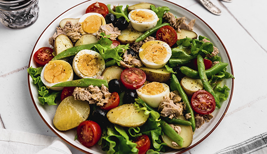
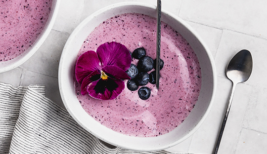
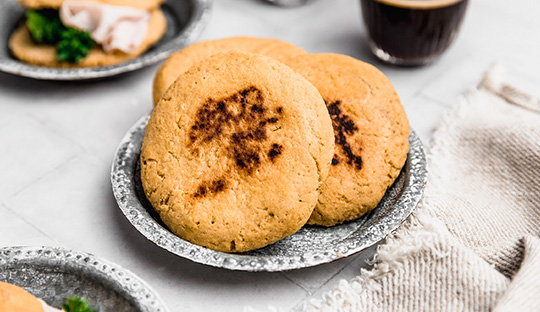

Panqueques de avena
Ingredientes
- 1 taza de avena tradicional
- 1/4 de taza de leche*
- 2 huevos
- 1 plátano (mientras más maduro mejor)
- Una cucharadita de Canela Molida
- Una cucharadita de Esencia de Vainilla
- Endulzante(a gusto)
- 20 gr de aceite de coco o 20 ml de aceite vegetal
Preparacion
- En una procesadora poner todos los ingredientes, menos los huevos y el aceite de coco. Mezclar por un minuto o dos hasta que todo quede bien integrado.
- Luego, agregar los huevos y el aceite. Volver a mezclar por unos segundos hasta que se vuelva una masa homogénea.
- Calentar un sartén grande, colocar aceite y esperar a que se derrita. Poner un cucharón mediano de mezcla por panqueque y cocinar hasta que empiecen a aparecer burbujas por el lado de arriba; dar vuelta y cocinar por el otro lado hasta que estén dorados. Sacar del sartén y mantener tapados hasta terminar con toda la mezcla, también se pueden recalentar en el horno.
- Servir acompañados de berries y maple syrup o la miel que deseen.

Ensalada Nicoise
Ingredientes
- 8 papas pequeñas
- 100 gr de porotos verdes
- 3 huevos duros
- Lechuga costina
- 50 gr de aceitunas negras
- 50 gr de tomate cherry
- 50 gr de tomate cherry
- 1 cda de mostaza dijon
Preparacion
- Cortar las papas en mitades y cocinarlas desde agua fría con sal a fuego medio. Toman aproximadamente 15-20 minutos desde que hierve el agua. Retirar y dejar que se enfríen por completo.
- Poner a hervir agua con abundante sal en una sartén pequeña. Cortar los porotos en trozos medianos y cocinarlo por 5 minutos en el agua. Retirarlos a un bowl con agua y hielo una vez listos.
- Disponer la ensalada en un plato.

Smothie arandanos
Ingredientes
- 130 gr de arándanos congelados
- 1 plátano congelado
- 150 gr de yogurt natural
- Leche para ajustar
- 3 cdas de Coco rallado Gourmet
- Fruta fresca
- Flores comestibles
Preparacion
- Licuar los arándanos y plátano congelados con el yogurt y agregar leche de a poco para ayudar a la licuadora, pero intentar agregar lo mínimo posible.
- Servir en un bowl con tu fruta favorita y coco rallado tostado.

Pan de avena
Ingredientes
- 200 gr de harina de avena
- 2 huevos
- 2 cdta de Polvos de Hornear
- 1 cdta de Sal de Mar
- 6 cdas de agua
- Aceite de oliva para cocinar
Preparacion
- Licuar los arándanos y plátano congelados con el yogurt y agregar leche de a poco para ayudar a la licuadora, pero intentar agregar lo mínimo posible.
- Servir en un bowl con tu fruta favorita y coco rallado tostado.